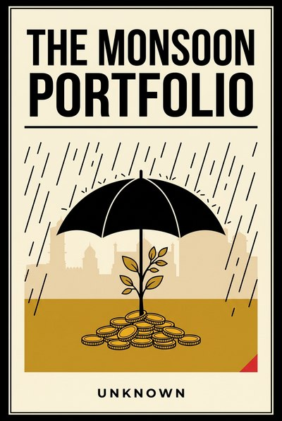

Library › Money & Finance
The Monsoon Portfolio — Summary & Key Lessons

How to build a business, and a household, that treats uncertainty as a season instead of a shock.
📖 OPEN THE FULL INTERACTIVE BREAKDOWN →🌐 Read it in Hindi, Hinglish, Gujarati, Tamil & 22 more languages — free, with audio.
💡 The Big Idea
The monsoon is India's oldest case study in planning under uncertainty: everything from sowing to festivals to freight bends around a variable nobody controls but everyone prepares for. This book takes that posture, respect the season, never the forecast, and turns it into a portfolio doctrine for businesses and households: buffers that are the business, debts that breathe with income, natural hedges between costs and revenues, storage that sells scarcity, and pivot plans written in sunshine. Its examples are real and public, from onion export whiplash to flexible-repayment microfinance to the greatest concentration bet ever lost, and its promise is simple: you cannot control the rain, but you can absolutely control whether you are the kind of enterprise that drowns in it.
🧠 The 10 Key Lessons
Lesson 1: Bet on Rain, Not Weather
Chapter 1: Systems Over Forecasts
The farmer who plans around the monsoon's certainty and the city that plans around a forecaster's confidence live in different risk classes. Systems thinking assumes the season and builds for its range; forecast thinking bets on a single outcome and calls the surprise bad luck. Every plan that depends on one number being right is a weather bet, whatever the spreadsheet claims.
📖 Example: Supply chains that pre-qualified second suppliers before the pandemic sailed through it, while forecast-dependent planners spent the quarter apologizing; the monsoon itself humbles India's best meteorology every few years, which is the tuition that teaches the lesson. Read the full example →
⚡ Do this: Take one plan that assumes a single best-case number and rewrite it for the season's range: what you do at plus 30, minus 30, and zero. Calendar the review before the season, not during it.
Lesson 2: The Buffer Is the Business
Chapter 2: Strategic Stocks
Buffer stocks look like idle capital and behave like insurance that pays in kind: the grain reserve, the spare part, the cash tin. Societies and firms that hold them convert shortages into non-events, and those that optimized them away discover the difference between efficiency and resilience precisely when it is too expensive to buy the difference back.
📖 Example: Onion export bans and price whiplash punish buffer-less households hardest, the firms that kept six weeks of critical stock through the shipping crises of recent years took share from those that had optimized to zero, and nations that stockpiled quietly out-negotiated those that ran lean into the run. Read the full example →
⚡ Do this: Identify the one input without which you stop. Hold a named buffer of it (six weeks to start) in a separate place, with a written rule for when it may be touched.
Lesson 3: Diversify the Season
Chapter 3: Rotation for Cashflows
Rotation is the farmer's portfolio theory: crops that fail in opposite seasons, so the land never bets the year on one weather. Cashflows can rotate the same way, a counter-seasonal product, a counter-cyclical client, a second market whose peak is your trough, so that no single season can starve the whole operation.
📖 Example: The umbrella-and-sunglasses cart is the street's index fund, wedding vendors who added corporate events survived their off-seasons, and tourism businesses that built a monsoon product stopped writing off a quarter every year. Read the full example →
⚡ Do this: Add one counter-seasonal revenue line this year, deliberately small. The metric is not profit; it is whether your worst month got less bad.
Lesson 4: Loans That Breathe
Chapter 4: Repayment Shaped Like Income
Rigid EMIs against seasonal income are a default factory: the money arrives in harvests and festivals, not in twelve equal moons. Repayment shaped like income, balloon after harvest, holiday-sized in the lean quarter, is not softer banking, it is truer banking, and it is how the street has always structured credit between people it knows.
📖 Example: Microfinance's flexible-repayment experiments cut default precisely where rigid products bred it, commodity lenders have structured around harvest calendars for a century, and every business that negotiated a seasonal schedule before the crisis kept the collateral it would otherwise have donated. Read the full example →
⚡ Do this: Take your most rigid obligation and model a seasonal schedule against your real income curve. Renegotiate one loan or receivable this quarter to breathe with the year.
Lesson 5: Insurance You Buy Once and Use Once
Chapter 5: The Boring Policy
Resilience's least glamorous instrument is the prepaid promise: term cover, asset insurance, index policies that pay when rainfall fails. Insurance never feels like a win until the year it is the whole plan, and the discipline is to buy it for catastrophe, sized honestly, and to stop expecting it to also be an investment, a tax trick or a thrill.
📖 Example: Index insurance payouts after failed monsoons kept small farms alive where relief arrived late, and the businesses that carried business-interruption cover through recent years discovered the difference between a bad month and an obituary. Read the full example →
⚡ Do this: Buy one boring, honest policy this month for the loss that would actually end you. Read its exclusions out loud; that reading is the product.
Lesson 6: Store the Surplus, Sell the Scarcity
Chapter 6: Timing as a Tool
Storage converts a glut into an option: hold the harvest, sell the scarcity, and let the calendar do the margin. The discipline is to store what stores well and to respect the difference between patient holding and hopeful speculation, a line the mandi knows and the casino does not. Storage is patience with a roof on it.
📖 Example: Cold-storage economics in produce belts, warehousing plays in commodity cycles, and even content archives that 'store' a brand's back catalog for future monetization all run the same arbitrage between now and later. Read the full example →
⚡ Do this: Pick one thing you currently sell immediately that stores safely. Delay one batch's sale deliberately this season and record what the patience paid.
Lesson 7: The Village Diversifies the Family
Chapter 7: The Remittance Portfolio
Rural households have always run a portfolio: land for the family, a job in the city, livestock at home, a remittance line between them. No single failure starves the household, because income sources are deliberately uncorrelated. Modern dual-income strategies, side businesses and geographic spreads are the same architecture with better broadband.
📖 Example: Migrant remittances cushioning village shocks through every national crisis, and the families that sailed layoffs on one unaffected income, both prove the oldest risk law: the household that feeds from two fields eats through one drought. Read the full example →
⚡ Do this: Map your household or business income sources and mark which share depends on the same employer, client or platform. Set a ceiling: no single source above two-thirds within a year.
Lesson 8: Every Drought Rewrites the Map
Chapter 8: The Pre-Written Pivot
Shocks relocate demand: the drought moves buyers, the regulation moves the market, the pandemic moves the office. The organizations that land well had already written their pivot, trigger conditions, new shape, first thirty days, while everyone was calm. A pivot drafted during the flood is not a strategy; it is a diary.
📖 Example: Restaurants with packaged-shelf plans in the drawer sailed through dining bans, exporters with alternate-market lists survived tariff wars, and the monsoon's own relocations of trade routes wrote this rule across centuries. Read the full example →
⚡ Do this: Write your one-page pivot plan this month: the trigger that activates it, the shape you shrink or shift to, and the first five actions. Date it, file it, review it yearly.
Lesson 9: Debt Is a Monsoon Too
Chapter 9: Concentration and the Corner
Cheap money arrives in cycles like rain, and the unprepared mistake the weather for the climate. The gravest errors are concentration bets made at peak liquidity, one commodity, one lender, one asset class, because cycles do not announce their turn and corners end the same way in silver, in stocks and in spice. The portfolio's job is to survive the turn, not to time it.
📖 Example: The Hunt brothers' silver corner of 1980 remains the definitive lesson in what one enormous position does to an otherwise safe fortune, and every leverage-fueled peak since has repeated the sermon in a new pulpit. Read the full example →
⚡ Do this: Cap any single exposure, commodity, client, lender or asset, at a third of its book this quarter, and write the cap down where the next borrowing decision will trip over it.
Lesson 10: Resilience Compounds Quietly
Chapter 10: The Quarterly Audit
Resilience is not a heroic rebuild; it is a boring habit: buffers topped, policies renewed, pivots redrafted, concentrations trimmed, schedules loosened, each item small enough to skip and compounding enough to save you. The monsoon portfolio is maintained like a roof, in the dry season, on a calendar, by people who expect rain without resenting it.
📖 Example: The families and firms that emerged intact from every recent global shock were rarely the smartest in the boom; they were the ones whose quiet checklist had been running for years before the sky spoke. Read the full example →
⚡ Do this: Book a recurring quarterly hour called Resilience Audit. Nine items on the sheet: buffer, insurance, pivot, concentrations, schedules, second suppliers, cash tin, key-person plan, debt breathing. Tick them in sunshine.
✅ 5-Step Action Plan
- Rewrite one best-case plan for the season's full range this month.
- Hold a named six-week buffer of your critical input, with touch rules.
- Renegotiate one obligation to breathe with your real income curve.
- Cap any single exposure at a third of its book and write the cap down.
- Book the quarterly Resilience Audit hour; nine items, in sunshine.
⚠️ When This Doesn't Work
This is a TheSmallBook Original, published under the name Unknown. Its examples (onion trade policy, microfinance repayment design, the 1980 silver corner, pandemic supply chains) are real public history used as teaching frames; nothing here is investment, insurance or lending advice, and the monsoon deserves your humility more than your strategy.
💀 The Graveyard Proves It
🥈 Bunker Hunt — The Richest Men in America Try to Corner Silver — and Lose Everything. Burn: The Hunt brothers lost ~$1.5B of their own fortune. Read the full case study →
💬 Best Quotes from The Monsoon Portfolio
- “Respect the season, never the forecast.”
- “The buffer is not idle money. It is the business, standing in the rain so you do not have to.”
- “Write your pivot in sunshine; nobody drafts well in a flood.”
Interactive version: mark lessons as read, listen in your language, share quote cards.